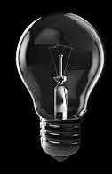

<script>
    function turnOnBulb()
    {
        document.getElementById("bulb").src="img/on.jpg"
    }

    function turnOffBulb()
    {
        document.getElementById("bulb").src="img/off.jpg"
    }

    // document.getElementById("bulb").onmouseover=function(){
    //     this.src="img/on.jpg";
    // }

    // document.getElementById("bulb").addEventListener(
    //     "mouseout", function(){
    //         this.src="img/off.jpg";
    //     }
    // )
</script>